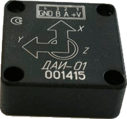
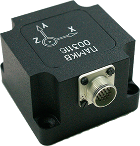
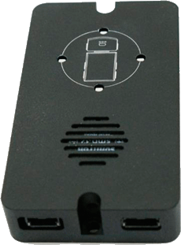
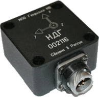

Датчик
автоматической идентификации события ДТП
Курсовертикаль
Датчик
критических углов со светодиодным индикатором
Наклономер
и измеритель линейных ускорений
Обеспечивают измерение углов наклона относительно плоскости горизонта и проекций вектора кажущегося ускорения объекта, на который установлен наклономер. Передача информации осуществляется по цифровому помехоустойчивому двухпроводному интерфейсу RS485. Класс защиты прибора корпусом IP67. Возможно бескорпусное исполнение прибора.
Система предназначена для оповещения водителя о наклоне автомобиля, при котором возможно его переворачивание (например, при езде по большим неровностям на пересеченной местности). Предусмотрена двухуровневая световая и звуковая индикация, а также предупреждение о возможном завале автомобиля при резком развороте или заносе при резком торможении. Система состоит из наклономера, закрепляемого на раме транспортного средства и индикатора, который размещается в кабине в зоне видимости водителя.
Предназначена для измерения угловых скоростей и кажущихся ускорений в связанной системе координат.
Датчик автоматической идентификации события дорожно-транспортного происшествия (ДТП), предназначен для передачи информации о проекции кажущегося ускорения по осям X, Y и Z на внешнее устройство, а так же определения факта дорожно-транспортного происшествия и записи профилей ускорения, направления удара и коэффициента сцепления в энергонезависимую память. Передача информации осуществляется по интерфейсу RS485.
| Параметр | Значение |
| Диапазон измерений ускорений (оси Х, Y и Z) | -24G ... +24G |
| Разрешение, не более | 0,1 G |
| Погрешность измеряемого ускорения, не более | 10% |
| Напряжение питания | от 5 до 12 В |
| Выход RS485 | есть |
| Степень защиты | IP67 |
| Определение индекса возможного ущерба ASI15 | есть |
| Срок поставки, мес. | 6 |